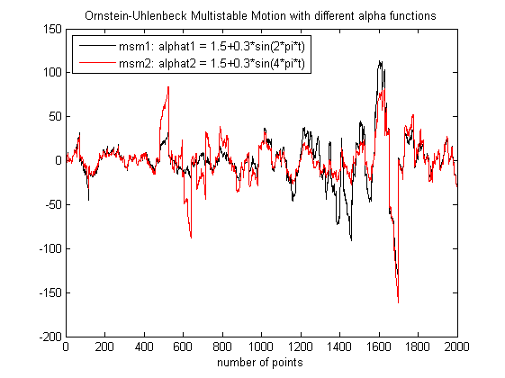
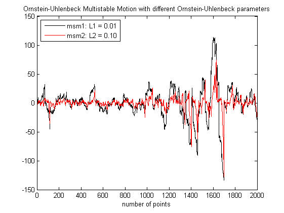

| FRACLAB Functions |
|
Generates a Ornstein-Uhlenbeck Multistable Motion
MSM = msmornhulen(N,ALPHA,LAMBDA,M,m)
MSM = msmornhulen(...,SEED)
MSM = msmornhulen(N,ALPHA,LAMBDA,M,m) Generates the Ornstein-Uhlenbeck multistable motion, MSM, using a sample size, N, and a stability function, ALPHA, an Ornstein-Uhlenbeck parameter, LAMBDA, a kernel cut-off parameter, M and a number of discretization steps, m. The parameters N, M and m are positive integers and this triplet should be chosen so that the value m*(N+M) is a power of 2. LAMBDA is a positive real and ALPHA is in (0,2). This allows to model a process whose index of stability varies in time.
MSM = msmornhulen(...,SEED) Generates the Ornstein-Uhlenbeck multistable motion, MSM, with a specific random seed, SEED. This is useful to generate the same path several times or to compare the paths of different MSMs.
N = 1000; L = 0.02; M = 24; m = 32;
t = linspace(0,1,N); alphat = eval('1.5+0.3*sin(2*pi*t)');
msm = msmornhulen(N,alphat,L,M,m);
figure; plot(t,msm);
title('Ornstein-Uhlenbeck Multistable Motion with alphat'); xlabel('time')

N = 2000; L = 0.01; M = 48; m = 32; t = linspace(0,1,N);
alphat1 = eval('1.5+0.3*sin(2*pi*t)');
alphat2 = eval('1.5+0.3*sin(4*pi*t)');
msm1 = msmornhulen(N,alphat1,L,M,m,1000);
msm2 = msmornhulen(N,alphat2,L,M,m,1000);
figure; plot(msm1,'k'); hold on; plot(msm2,'r');
legend('msm1: alphat1 = 1.5+0.3*sin(2*pi*t)','msm2: alphat2 = 1.5+0.3*sin(4*pi*t)','Location','SouthWest');
title('Ornstein-Uhlenbeck Multistable Motion with different alpha functions');
xlabel('number of points');xlim([0 N])

N = 2000; L1 = 0.01; L2 = 0.1; M = 48; m = 32; t = linspace(0,1,N);
alphat = eval('1.5+0.3*sin(2*pi*t)');
msm1 = msmornhulen(N,alphat,L1,M,m,1000);
msm2 = msmornhulen(N,alphat,L2,M,m,1000);
figure; plot(msm1,'k'); hold on; plot(msm2,'r');
legend('msm1: L1 = 0.01','msm2: L2 = 0.05','Location','NorthWest');
title('Ornstein-Uhlenbeck Multistable Motion with different Ornstein-Uhlenbeck parameters');
xlabel('number of points');xlim([0 N])

msmlevy, msmlinmfrac, asmornhulen
[1] K. Falconer, J. Lévy Véhel
"Multifractional, multistable, and other processes with prescribed local form",
Journal of Theoretical Probability, Vol. 22 (2009) 375-401
[2] R. Le Guével, J. Lévy Véhel "A Ferguson-Class-LePage series representation of multistable multifractional processes and related processes"
| |
msmlinmfrac | multinom | |